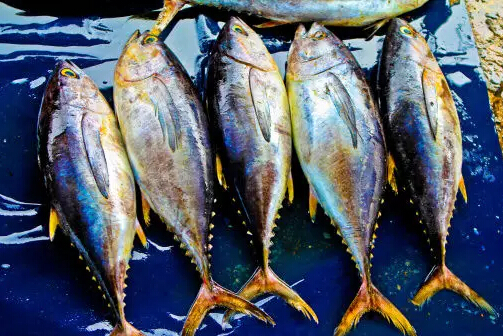
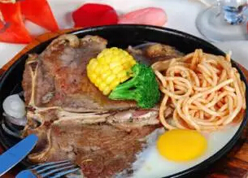
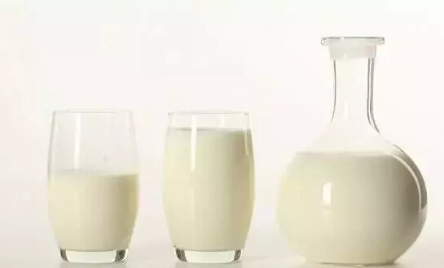
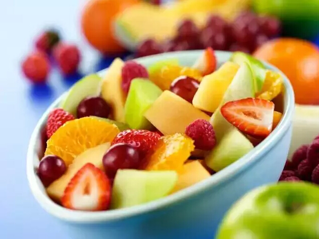
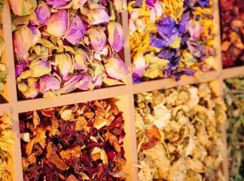

怀孕忌口太痛苦？孕妇不能吃的到底有哪些？
当你怀孕的时候，确实有很多食物会影响你和宝宝的健康，可能比你想象的还要多。但这些食物，跟咱们听到的那些可不太一样。
避免含汞量高的海鲜
海鲜是很好的蛋白质来源，鱼类中含有的“omega3”脂肪酸对宝宝脑部和眼睛的发育都大有好处。但是有的鱼和贝类含有汞超标的危险，过多汞的摄入会对宝宝正在发育的神经系统有损害。
越是体格大、生命周期长的鱼，含汞量越多。美国食品药品局（FDA）和环境保护组织（EPA）呼吁孕妇避免食入：
箭鱼、鲨鱼、马鲛鱼、鲭鱼、方头鱼
2010年美国民众饮食大全中建议孕妇每周摄入约230-280克海鲜。含汞量较低的海产品包括：
虾、三文鱼、鳕鱼、鲶鱼、凤尾鱼、鲑鱼
长鳍金枪鱼或金枪鱼排每周摄入不应超过6盎司（170克）。
注：大部分研究都支持“含汞摄入控制”理论，但也有研究表明，孕妇摄入超过FDA标准的海鲜也并未证明一定会产生负面影响。

不吃未煮熟的食物
（一）生的、未煮熟的、受污染的海鲜
不吃生的鱼和贝类。比如寿司、生鱼片、生的生蚝扇贝蛤蜊等。
不吃冰冻过、没有煮熟的海鲜。比如腌的、熏的、风干的海鲜，但烟熏的鱼类经过二次烘焙或烧煮是可以吃的。
怎样才是煮熟？煮鱼时内部温度应达到63摄氏度，鱼煮熟是指鱼肉可以分离成薄片并且全身不透明。虾、龙虾、扇贝应煮到肉质呈奶白色。蛤蜊、青口贝、生蚝应煮到壳张开，贝壳不张开的扔掉不能食用。
限制摄入受污染的鱼类。如果对水域的情况不明，一周食用该水域所产鱼类总量不超过6盎司（170克），并不再摄入其它鱼类。

（二）未煮熟的肉类、禽类、蛋类
孕期食物细菌中毒的风险会增加，你的反应会比没怀孕时更严重，并且食物中毒也会影响腹中的宝宝。
确保肉类、禽类食品完全煮熟。热狗和午餐肉在食用前要烧到滚烫。
避免直接食用冷藏过的肉制品。但罐装或无菌包装的是可以的。
煮鸡蛋时确保蛋白蛋黄凝固。生鸡蛋可能被有害细菌污染，所以也尽量不吃生的或半熟的鸡蛋。

避免食用未经巴氏消毒的乳制品
有很多低脂的乳制品，比如脱脂牛奶、马苏里拉芝士、农夫芝士等，都是很好的乳制品，但任何未经巴氏消毒的奶制品都不安全。避免食用软奶酪，如布里奶酪、羊乳酪、蓝纹奶酪，除非标明是经过巴氏杀菌的或由巴氏杀菌奶制成的，也避免食用未经巴氏消毒的果汁。

避免食用未洗净的水果蔬菜
食用水果蔬菜时应彻底洗净，以排除有害细菌。不要吃任何生的芽类食物（如豆芽、萝卜芽），因为可能含有致病菌，食用前务必煮透。

避免摄入过量咖啡因
咖啡因会穿过胎盘影响胎儿的心率。已有不少研究提及摄入过多的咖啡因与流产几率的增加有一些联系。
医生建议孕妇一天摄入咖啡因不超过200毫克。以下作为参考：一杯煮咖啡（237ml）含咖啡因约95mg，一杯茶（237ml）含有咖啡因约47mg，一听可乐（355ml）中含咖啡因约33mg。
避免饮用花草药茶
花草药茶对宝宝的发育几乎没有什么帮助，如果医生没有特别准许你的话，请不要喝花草药茶，包括那些被商家宣称为孕妇专用的产品。

避免摄入酒精
难得喝一杯不太会给胎儿造成损害，但任何度数的酒精饮品对孕妇来说都是不安全的。最安全的选择是孕期完全远离酒精。
想想喝酒会导致的风险：母亲怀孕期间饮酒会增加流产和死胎的几率，过多的酒精摄入也会造成许多严重的并发症，如脸部畸形、心脏发育不全、心智发育延迟等，即使适度饮酒也可能影响胎儿脑部发育。
如果你在发现怀孕之前喝过酒，不要胡乱猜测，与你的医生进行沟通。
除了文中列出的这些，其他食物都是可以吃哒。什么食物对孕妇最好？营养均衡的膳食搭配就是好的。小编倒是想提醒各位孕妈妈，孕期一定要记得控制体重哦，管住嘴迈开腿，对自己对胎儿都是好处多多！